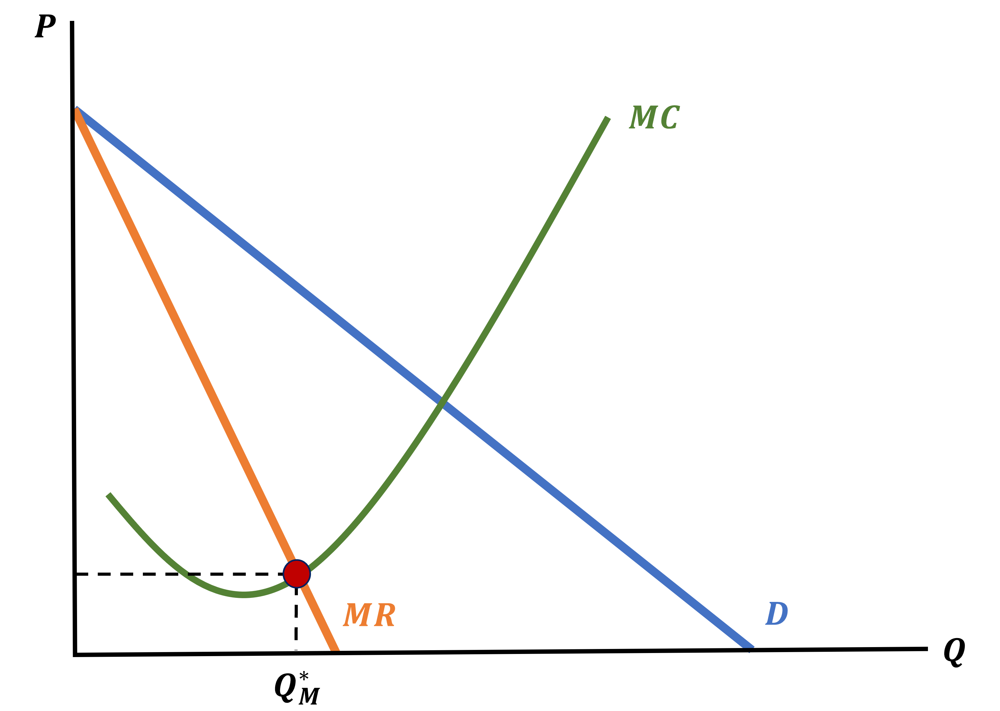
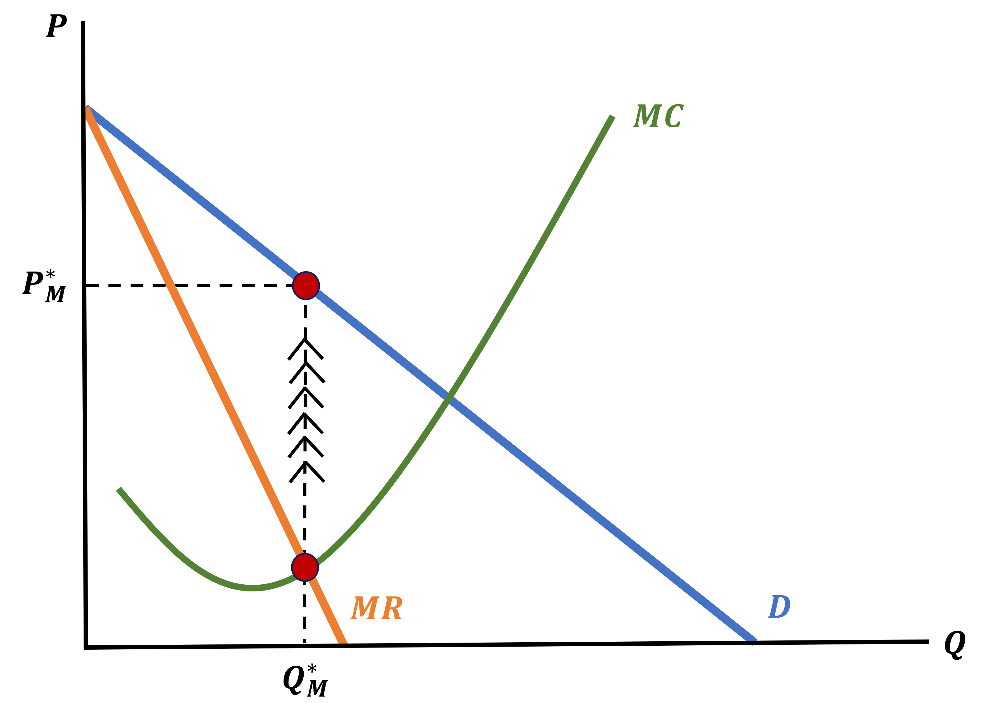
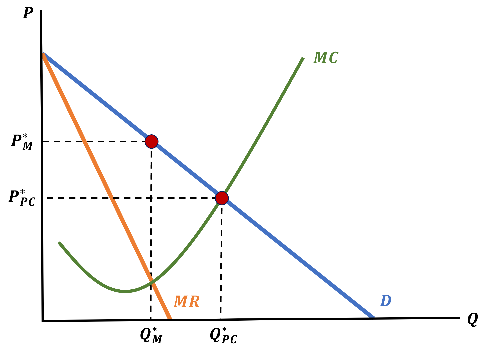
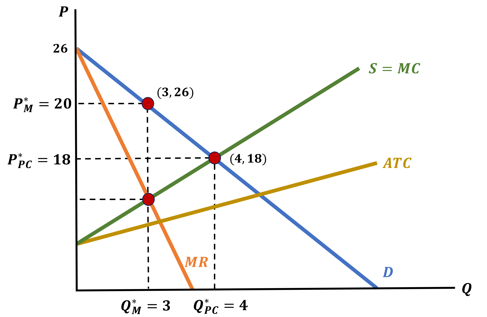
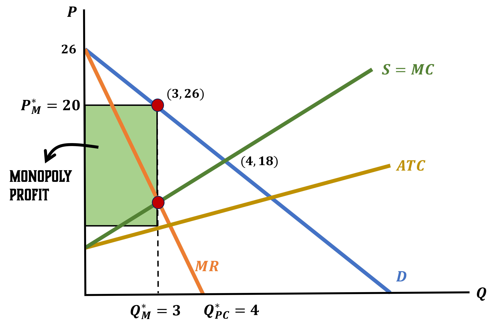
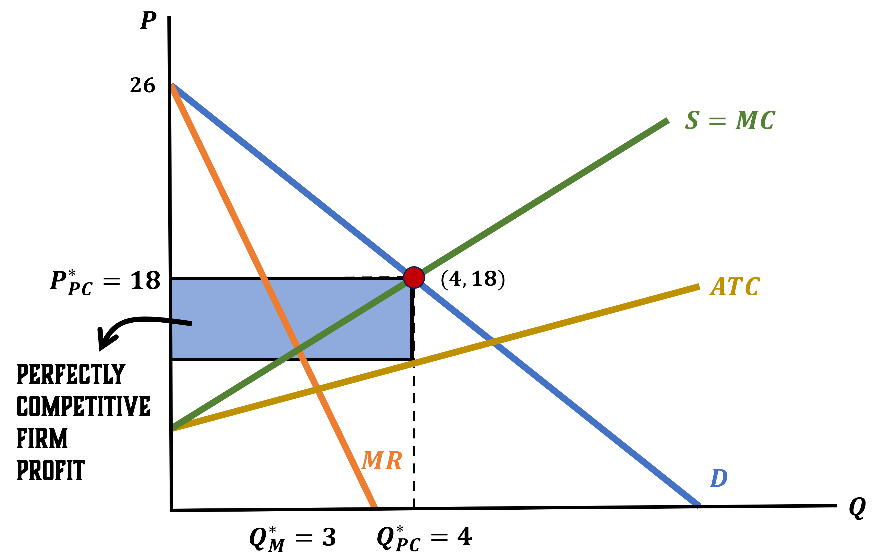
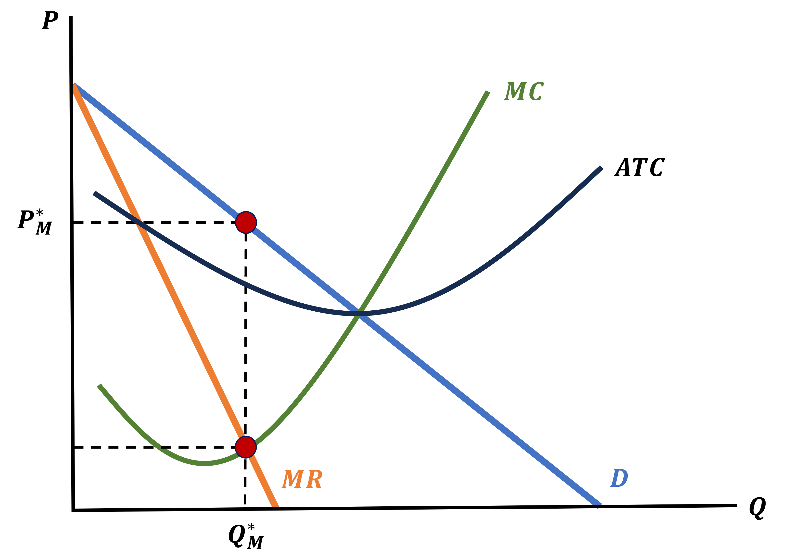
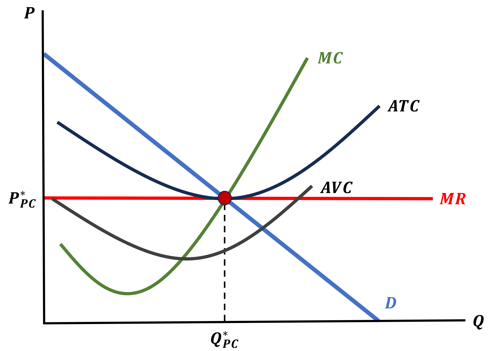

Monopoly
EC 311 - Intermediate Microeconomics
2024
Outline
Chapter 09
Topics
- Market Power: Barriers to Entry (9.1)
- Marginal Revenue (9.2)
- Monopoly Profit Maximization (9.3)
Market Power
How Perfect is Perfect?
Up to now, we have assumed that the market is operating under Perfect Competition, but how reasonable of an assumption is this?
- In some contexts, producers do have to worry about how much they produce because it will direclty impact the market price
- Professional Sport Leagues
- If they add more games to their seasons, it will likely decrease ticket prices due to higher quantity supplied
- Actors/Actresses
- If they are selective in the roles they take, they are able to demand higher pay for each one
- Professional Sport Leagues
We call this Imperfect Competition
Imperfect Competition
All firms that have to worry about their quantity produced share something in common:
They make something unique (or at elast “locally unique”)
Because their goods cannot be easily obtained elsewhere, one firm’s production will impact the price of the market
- We are no longer assuming they are perfect substitutes
In the extreme case, where a single firm is the sole producer of a unique good, they are called a Monopoly
Monopoly
We will figure out how a Monopoly Firm (Monopolist) chooses how much to produce, and how this implies they set the market price
Key Differences Between Competition Structures
Monopolist
- Choosing the quantity to produce and choosing the market price is the same thing
Perfectly Competitive Firm
- Has no say on the market price, and only chooses quantity
Understanding Monopolies
Contrary to previous lectures, I think this is easier to understand mathematically first, and then graphically
The math will show us how choosing quantity is the same as choosing prices and then we can visualize
Monopoly Profits
The Monopolist profit function looks the same
\[\begin{align*} \pi &= R(Q) - C(Q) \\ \pi &= P \cdot Q - C(Q) \end{align*}\]
But now we have to recognize the Key Difference I previously mentioned:
A Monopolist is not a price-taker.
They are a Price Setter
Monopoly Setting Quantity
Whatever Quantity the Monopolist sets will, alongside the Demand Curve, immediately dtermine the market price
Take for example the following scenario
Let the Demand Curve be
\[ P = 100 - Q \]
If the Monopolist produces the following quantities, what must prices be?
\(Q = 60\)
\[ P = 100 - 60 = 40 \]
\(Q = 70\)
\[ P = 100 - 70 = 30 \]
Difference in Monopoly Profit Function
So instead of having just Price \((P)\) in their profits, we will substitute it for something else
\[ \pi = \color{red}{P} \cdot Q - C(Q) \]
The Monopolist will plug in the Demand Curve
- This is how we can model the fact that the Monoplist Firm will choose their optimal quantity \(Q^{*}\) knowing that their choice will determine \(P\)
\[ \pi = \color{red}{\text{Demand Curve}} \cdot Q - C(Q) \]
Monopoly Profit - General Case
In the most general form, we have
\[\begin{align*} \pi &= R(Q) - C(Q) \\ \pi &= \color{red}{P} \cdot Q - C(Q) \end{align*}\]
Let the Demand Curve be \(\; P = f(Q_{D})\) \[\begin{align*} \pi &= \color{red}{f(Q_{D})} \cdot Q_{S} - C(Q_{S}) \end{align*}\]
At Equilibrium we know that \(\; Q_{S} = Q_{D} = Q\)
\[\begin{align*} \pi &= f(Q) \cdot Q - C(Q) \end{align*}\]
Monopoly Profit - Example
Let a Monopolist face the following Costs and Demand Curve
\[ C(Q) = Q^{2} \;\;\;\;\; \& \;\;\;\;\; P = 100 - Q_{D} \]
Find the Profit Function of the Monopolist
Recall Profit is given by \(\; \pi = P \cdot Q - C(Q)\)
\[\begin{align*} \pi &= P \cdot Q - C(Q) \\ \pi &= (100 - Q_{D}) \cdot Q_{S} - Q_{S}^{2} \end{align*}\]
Use fact that \(\; Q_{S} = Q_{D} = Q\)
\[\begin{align*} \pi &= (100 - Q) \cdot Q - Q^{2} \\ \pi &= 100Q - Q^{2} - Q^{2} \\ \pi &= 100Q - 2Q^{2} \end{align*}\]
Maximizing Monopoly Profits
Luckily, we maximize their profits the exact same way as before
By finding \(Q^{*}\) from \(\frac{\partial \pi}{\partial Q} = 0\)
\[ \pi = 100Q - 2Q^{2} \;\;\;\; \& \;\;\;\; P = 100 - Q \]
Find the Profit Maximizing Quantity and the Market Price
Finding Profit Maximizing Quantity
\[\begin{align*} \frac{\partial \pi}{\partial Q} &= 0 \\ \\ 100 - 4Q &= 0 \\ \\ 40Q &= 100 \\ \\ Q^{*}_{M} &= 25 \end{align*}\]
Finding Market Price
\[\begin{align*} P &= 100 - Q^{*}_{M} \\ \\ P^{*}_{M} &= 100 - 25 \\ \\ P^{*}_{M} &= 75 \end{align*}\]
How Does This Compare to Our Perfectly Competitive Market?
Let’s find and compare what we would have gotten under Perfect Competition
Monopoly
\[\begin{align*} Q^{*}_{M} &= 25 \\ \\ P^{*}_{M} &= 75 \end{align*}\]
Find Perfectly Competitive Equilibrium \[ C(Q) = Q^{2} \;\;\; \& \;\;\; P = 100 - Q \]
Find Supply \[\begin{align*} \frac{\partial \pi}{\partial Q} &= 0 \\ P - 2Q &= 0 \\ P &= 2Q \end{align*}\]
Set Supply = Demand
\[\begin{align*} 2Q &= 100 - Q \\ Q^{*}_{PC} &= 33.3 \\ P^{*}_{PC} &= 66.7 \end{align*}\]
Monopoly vs Perfect Competition
Monopoly Equilibrium \[\begin{align*} Q^{*}_{M} &= 25 \\ \\ P^{*}_{M} &= 75 \end{align*}\]
Perfect Competition Equilibrium \[\begin{align*} Q^{*}_{PC} &= 33.3 \\ \\ P^{*}_{PC} &= 66.7 \end{align*}\]
- A Monopoly will always charge a higher price and produce less than the Perfectly Competitive Market
- This will be a recurring trend as we deal with market power
- When firms have market power, the equilibrium will always be less than “ideal”
Monopoly
Important Note
A Monopolist maximizes profits by setting Marginal Revenue = Marginal Cost just like a Perfectly Competitive Firm
The main difference is that a Monopolist’s does not equal the market price
Their choice of quantity will affect their marginal revenue
Let’s see what a Monopolists Marginal Revenue looks like
Marginal Revenue
What is a Monopoly’s Marginal Revenue?
We find Marginal Revenue in the same way we have done before, we look at Revenue and take the derivative
Let’s look at a general case
Assume a linear Demand Curve: \(\;\;\; P = a - b \cdot Q_{D}\)
We first find Revenue
\[\begin{align*} R(Q) &= \color{red}{P} \cdot Q_{S} \\ R(Q) &= \color{red}{(a - b \cdot Q_{D})} \cdot Q_{S} \end{align*}\]
Remember \(\; Q_{S} = Q_{D} = Q\)
\[\begin{align*} R(Q) &= (a - b \cdot Q) \cdot Q \\ R(Q) &= aQ - bQ^{2} \end{align*}\]
Find the Derivative
\[\begin{align*} MR(Q) &= \frac{\partial R(Q)}{\partial Q} \\ \\ MR(Q) &= a - 2bQ \end{align*}\]
Monopoly Marginal Revenue
\[ \text{Demand: } P = a - b \cdot Q \;\;\;\; ; \;\;\;\; \text{Marginal Revenue: } P = a - 2bQ \]
A Monopolist’s Marginal Revenue Curve is just like the Demand Curve, except it is twice as steep

How Monopolists Make Their Choices
We know that Monopolists set MR = MC to maximize profits, but this only tells us the Quantity
How Monopolists Make Their Choices
To find the price \(P_{M}^{*}\) they demand at \(Q_{M}^{*}\), we have to take one additional step
We will use the Demand Curve
- The Monopolist chose their quantity while knowing that their choice determines market price through the Demand Curve
How Monopolists Determine Their Market Price
We follow the Monopoly Quantity up to the Demand Curve
Monopoly Market Equilibrium
To summarize:
- We use the Demand Curve to find the Marginal Revenue Curve
- The Monopolist produces the quantity determined by setting MR = MC
- The Monopolist Price is determined by the Demand Curve at \(Q_{M}^{*}\)
How Does This Compare to Perfect Competition?
We already showed that the Monopolists will produce less and demand a higher price
We can also show this on the same graph, which is useful to visualize what is happening
Recall that the Marginal Cost Curve is the same thing as the Supply Curve in Perfect Competition
The Perfect Competition Price & Quantity is where Demand equals Supply
Monopoly + Perfect Competition
Why Restrict Quantity?
Monopolists make an active choice to restrict quantity supplied, but why?
- It makes them higher profits
What about the nice tale of “all firms make zero economic profit in the Long-Run”?
Let’s address it
Monopoly Long-Run Profits
The question is
Why aren’t Monopolies simply eliminated by competition in the Long-Run?
There’s two exaplanations:
- Monopolists can only exist when there are Barriers to Entry that other firms cannot overcome
- These tend to be either physical (think infrastructure) or legal (regulatory)
- Even when there exist multiple firms in the market, they “collude” with one another and act as if they were a monopoly
- We call this a Cartel
Now let’s see how we find profits for a monopoly
Monopoly Profit Maximization
Monopoly & Perfect Competition Example
No better way to learn than by doing. Let a firm have the following cost function and face the following Demand Curve
\[ C(Q) = 2Q^{2} + 2Q \;\;\;\;\; \& \;\;\;\;\; P = 26 - 2Q_{D} \]
We will:
- Find the Supply Curve, Market Equilibrium Price, and Quantity assuming the firm is a Price Taker
- Find Monopoly Price & Quantity
- Show Profits are higher in the Monopoly Market
- Graph the found Curves
- Add the Price, Quantities, & Profits
Finding Perfect Competition Equilibrium
\[ C(Q) = 2Q^{2} + 2Q \;\;\;\;\; \& \;\;\;\;\; P = 26 - 2Q_{D} \]
Find the Perfectly Competitive Market Equilibrium Price and Quantity
Hint: In Perfect Competition Supply = MC
Find the Supply Curve
\[\begin{align*} P &= MC \\ P &= 4Q_{S} + 2 \end{align*}\]
Set Supply Equal to Demand Remember \(\; Q_{S} = Q_{D} = Q\)
\[\begin{align*} \text{Supply} &= \text{Demand} \\ 4Q + 2 &= 26 - 2Q \\ 6Q &= 24 \\ Q^{*}_{PC} &= 4 \end{align*}\]
\[\begin{align*} P^{*}_{PC} &= 26 - 2Q^{*} \\ P^{*}_{PC} &= 26 - 2(4) \\ P^{*}_{PC} &= 18 \end{align*}\]
Finding Monopoly Equilibrium
\[ C(Q) = 2Q^{2} + 2Q \;\;\;\;\; \& \;\;\;\;\; P = 26 - 2Q_{D} \]
Find the Monopoly Equilibrium Quantity and Price
Remember that Monopolists will include the Demand Curve in their Revenue
Monopolists Find Quantity from MR = MC
\[\begin{align*} R(Q) &= \color{red}{P} \cdot Q \\ R(Q) &= \color{red}{(26 - 2Q)} \cdot Q \\ R(Q) &= 26Q - 2Q^{2} \end{align*}\]
Marginal Revenue
\[\begin{align*} MR &= \frac{\partial R(Q)}{\partial Q} \\ MR &= 26 - 4Q \end{align*}\]
Set MR = MC
\[\begin{align*} MR &= MC \\ 26 - 4Q &= 4Q + 2 \\ 8Q &= 24 \\ Q^{*}_{M} &= 3 \end{align*}\]
\[\begin{align*} P^{*}_{M} &= 26 - 2\color{red}{Q^{*}_{M}} \\ P^{*}_{M} &= 26 - 2\color{red}{(3)} \\ P^{*}_{M} &= 20 \end{align*}\]
Show Profits are Higher in Monopoly Market
\[ \pi = P \cdot Q - C(Q) \]
Find both Market Profits and Compare Them
Perfect Competition Profits P = 18 & Q = 4
\[\begin{align*} \pi_{PC} &= 18 \cdot 4 - 2(4)^{2} - 2(4) \\ \pi_{PC} &= 72 - 32 - 8 \\ \pi_{PC} &= 32 \end{align*}\]
Monopoly Profits P = 20 & Q = 3
\[\begin{align*} \pi_{M} &= 20 \cdot 3 - 2(3)^{2} - 2(3) \\ \pi_{M} &= 60 - 18 - 6 \\ \pi_{M} &= 36 \end{align*}\]
Which Market Gives Larger Profits?
\[ \pi_{PC} \; < \; \pi_{M} \]
Graphing Both Markets
Graphing Monopoly Profits
Graphing Perfect Competition Profits
Important Equilibrium Graphs
One very important takeaway is to know how Perfectly Competitive Firms and Monopolies graphs look like
Monopoly

Perfect Competition

EC311 - Lecture 08 | Monopoly